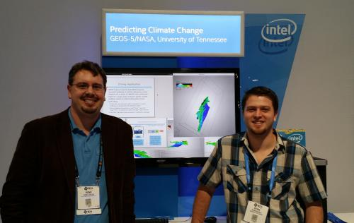

|
Filter based on:
[Student Successes]
[Awards and Recognition]
[Funding]
[Outreach and Leadership]
[Personnel]
[All News]
Note: we are behind on getting the website updated for 2021. Many good happenings, including 8 publications and 3 Best Paper awards. June 14, 2021
CDUX Students Present Three Papers at EGPGV, Including Best Paper and Best Short Paper
Congratulations to Sudhanshu Sane and Roba Binyahib for each receiving awards
at the EuroGraphics Parallel Graphics and Visualization Symposium (EGPGV) today.
Sudhanshu's work received Best Paper, while Roba's work received Best Short Paper.
Additionally, Sam Schwartz presented his work, for a total of three CDUX papers at EGPGV:
June 1, 2021
Roba Binyahib Joins Advanced Rendering and Visualization Team at Intel
Congratulations to CDUX alum Roba Binyahib, who began a staff position at Intel today as a Graphics Engineer working as part of their Advanced Rendering and Visualization team.
This position builds on much of her PhD research of scientific visualization and high-performance computing, focusing on developing visualization for large scale.
April 27, 2021
CDUX Presentations at DOECGF 2021
CDUX personnel and alumni made five presentations at the
Department of Energy Computer Graphics Forum (DOECGF),
which was held virtually this week:
March 4, 2021
Ph.D. Defense for Ryan Bleile
Congratulations to Dr. Ryan Bleile who successfully defended his Ph.D. dissertation today!!
His committee consisted of Hank Childs (advisor), Allen Malony, Boyana Norris,
and Shabnam Akhtari (UO, Mathematics).
His thesis, titled "Enhancing Monte Carlo Particle Transport for Modern Many-Core Architectures," considered various ways MC techniques will be challenged by exascale computing, as well as solutions for those challenges.
His thesis included four of his five first-authored publications.
Ryan joined Lawrence Livermore National Laboratory
as a staff scientist midway through his Ph.D. process
(in April 2018), and completed his dissertation on "nights and weekends."
He will continue at LLNL after graduation.
November 12, 2020
Yuya Kawakami Presents Paper at ISAV 2020
CDUX M.S. student Yuya Kawakami presented his paper
"Benchmarking In Situ Triggers Via Reconstruction Error"
today at
ISAV 2020.
The workshop was scheduled to be held in Atlanta, GA as part of SC20,
but was instead held virtually due to COVID-19.
The paper considers the recent trend of using lightweight in situ "triggers"
to decide whether heavyweight visualization and analysis tasks should occur,
and proposes a benchmarking system for evaluating these approaches.
CDUX members Nicole Marsaglia and Hank Childs were co-authors on the paper,
as well as CDUX alum Matt Larsen.
October 25, 2020
James Kress Presents Paper at LDAV 2020
CDUX Ph.D. student James Kress presented his short paper
"Comparing Time-to-Solution for In Situ Visualization Paradigms at Scale"
at the IEEE Symposium on Large Data Analysis and Visualization today.
As with several of his recent papers,
there were eight additional co-authors on the paper,
including Hank Childs, CDUX alum Matt Larsen, and frequent CDUX collaborators
David Pugmire and Scott Klasky of Oak Ridge.
This work was the third (and last) of James' explorations from his thesis
comparing in transit and inline visualization.
Where the previous two works had focused on cost savings, this final work
looked at time-to-solution.
September 14, 2020
Roba Binyahib Presents Research Results at Cluster 2020
CDUX Ph.D. student Roba Binyahib
presented her recent research
results at the IEEE Cluster Conference today.
Her paper, titled
"Parallel Particle Advection Bake-Off for Scientific Visualization Workloads,"
compared four parallelization approaches in a variety of configurations, including concurrencies of up to 8192 cores, data sets as large as 34 billion cells, and as many as 300 million particles.
Co-authors for the work were CDUX Ph.D. student Abhishek Yenpure,
David Pugmire of Oak Ridge, and Hank Childs.
June 23, 2020
James Kress Presents Paper at ISC'20
CDUX Ph.D. student James Kress presented his paper today,
"Opportunities for Cost Savings with In Transit Visualization,"
at the ISC High Performance conference.
There were eight additional co-authors on the paper,
including Hank Childs, CDUX alum Matt Larsen, and frequent CDUX collaborators
David Pugmire and Scott Klasky of Oak Ridge.
This work built on James' ISC paper in 2019,
which demonstrated that in transit visualization can outperform
inline visualization.
In this paper, James established a cost model for evaluating when one
paradigm will outperform the other and demonstrated a larger set of
use cases where in transit will run faster.
June 15, 2020
Abhishek Yenpure Awarded J. Donald Hubbard Family Scholarship
Congratulations to Abhishek Yenpure, who has received the J. Donald Hubbard Family Scholarship.
This scholarship is awarded to students who show an interest in human-computer interaction, computer graphics, or multimedia.
Congratulations Abhishek!!
June 4, 2020
Kristi Belcher Defends M.S. Thesis and Joins Lawrence Livermore
Congratulations to Kristi Belcher who successfully defended her M.S.
thesis today!
Her thesis, titled "Efficient Parallel Particle Advection via Targeting Devices," considered how to optimize performance by adaptively choosing between the CPU and GPU.
Kristi will begin a position at Lawrence Livermore National Laboratory in June. She will be working on developing Umpire, a resource management library that allows the discovery, provision, and management of memory on machines with multiple memory devices like NUMA and GPUs.
May 27, 2020
Sudhanshu Sane Presents State of the Art Report at EuroVis 2020
CDUX Ph.D. student Sudhanshu Sane presented his
State of the Art Report (STAR) at the
EuroVis Conference.
His survey paper, titled
A Survey of Seed Placement and Streamline Selection Techniques,
will be published in the Computer Graphics Forum journal.
Co-authors on the work include Roxana Bujack, Christoph Garth, and Hank Childs.
The survey was derived from the paper generated for his Area Exam at the
University of Oregon.
May 18, 2020
Ph.D. Defense for Sudhanshu Sane
Congratulations to Dr. Sudhanshu Sane who successfully defended his Ph.D. dissertation today!!
His committee consisted of Hank Childs (advisor), Boyana Norris, Brittany Erickson, and
Leif Karlstrom (UO, Earth Sciences).
His thesis, titled "Establishing the Viability and Efficacy of In Situ Reduction Via Lagrangian Representations for Time-Dependent Vector Fields,"
incorporated all three of his first-authored publications, and also included three additional works which are under submission or will be submitted soon.
After graduation, Sudhanshu will begin working as a post-doctoral researcher for Chris Johnson at the University of Utah.
April 28, 2020
CDUX Presentations at DOECGF 2020
CDUX personnel and alumni made five presentations at the
Department of Energy Computer Graphics Forum (DOECGF),
which was held virtually this week:
March 30, 2020
Sudhanshu Sane Delivers Data Visualization Course Via Moursund Scholarship
Sudhanshu Sane began delivering his data visualization course today for computer science undergraduates at the
University of Oregon.
He is being supported by the Moursund Graduate Scholarship.
Sudhanshu has designed the course from scratch, and is the instructor of record for this course.
March 6, 2020
Ph.D. Defense for Roba Binyahib
Congratulations to Dr. Roba Binyahib who successfully defended her Ph.D. dissertation today!!
Her committee consisted of Hank Childs (advisor), Allen Malony, Boyana Norris,
and Amanda Thomas (UO, Earth Sciences).
Her thesis, titled "Evaluating Parallel Particle Advection Algorithms over Various Workloads"
incorporated three of her four existing first-authored publications, plus an additional work that is in progress.
Roba will begin as a post-doctoral researcher at the National Renewable Energy Laboratory (NREL) after graduation,
working with Kenny Gruchalla.
This position is a return for Roba, who did a summer internship at NREL in 2018.
March 4, 2020
Ph.D. Defense for James Kress
Congratulations to Dr. James Kress who successfully defended his Ph.D. dissertation today!!
His committee consisted of Hank Childs (advisor), Allen Malony, Boyana Norris,
Victor Ostrik (UO, Math), and David Pugmire (Oak Ridge).
His thesis, titled "In-line vs. In-transit In Situ: Which Technique to Use at Scale?"
incorporated four of his eight first-authored publications, and also included an additional work that is in progress.
James previously started as a staff position at Oak Ridge National Laboratory and will continue in that role after
graduation.
January 30, 2020
Brent Lessley Presents Paper at VDA
CDUX Ph.D. alumnus Brent Lessley presented his paper today
HashFight: A Platform-Portable Hash Table for Multi-Core and Many-Core Architectures
at the Visualization and Data Analysis (VDA) conference
in Burlingame, CA today.
Brent performed the research behind this work while he was
a student in CDUX, and included the results in his dissertation. He then submitted the paper shortly
after his defense.
CDUX alumnus Samuel Li and Hank Childs were also co-authors.
The work formalized the hashing technique Brent developed
as part of an
external facelist algorithm based on data-parallel primitives.
In his VDA work, Brent compared his hardware-agnostic approach with hardware-specific comparators and showed his approach performed favorably or competitively for many workloads.
November 18, 2019
Roba Binyahib's Paper Presented at ISAV
CDUX Ph.D. student Roba Binyahib's paper
In Situ Particle Advection Via Parallelizing Over Particles
appeared today at
ISAV 2019 in Denver, CO.
The paper challenges the widely held assumption that in situ processing should employ a
parallelization approach over data blocks,
by showing use cases where execution time savings with other approaches are so
significant that they may offset concerns about memory usage.
The co-authors of the paper were David Pugmire of Oak Ridge National Laboratory and Hank Childs.
Hank presented the paper, since Roba was
getting her visa renewed and unable to attend.
October 21, 2019
Roba Binyahib Receives Best Paper Honorable Mention at LDAV
Congratulations to CDUX Ph.D. student Roba Binyahib for winning a
Best Paper Honorable Mention today for her paper
A Lifeline-Based Approach for Work Requesting and Parallel Particle Advection.
The paper appeared at the IEEE Large Data Analysis and Visualization (LDAV) Symposium in Vancouver, Canada.
Co-authors included David Pugmire, Boyana Norris, and Hank Childs.
The work bridges results from the HPC community into the visualization
community, specifically in a new work requesting method for particle
advection that uses the recent Lifeline approach for identifying victims.
July 30-August 1, 2019
CDUX Members Attend VTK-m Hackathon
CDUX team members Abhishek Yenpure and Hank Childs participated
in the hackathon
for the VTK-m project.
The hackathon was a 2.5 day event, located in Albuquerque, New Mexico.
Hank gave a tutorial to attendees on VTK-m, and also worked on
extending VTK-m with mesh quality metrics.
Abhishek focused on honing VTK-m's particle advection code, along with frequent
CDUX collaborator Dave Pugmire.
July 17, 2019
Ryan Bleile Presents Paper at HPCS
CDUX Ph.D. student Ryan Bleile presented his paper today
Thin-Threads: An Approach for History-Based Monte Carlo on GPUs
at the HPCS conference
in Dublin, Ireland.
There were six additional co-authors on the paper,
including Hank Childs and Ryan's LLNL mentor Patrick Brantley.
This work collected best practices for Monte Carlo transport on GPUs,
terming the collected approach as "thin threads" and contrasting
the approach with predecessor, "fat thread" approaches.
July 15, 2019
Sudhanshu Sane Awarded Moursund Graduate Scholarship
Congratulations to Sudhanshu Sane, who has received the inaugural Moursund Graduate Scholarship.
This scholarship supports future educators.
In addition to financial support from the scholarship, Sudhanshu will receive support from the CIS Department to teach a course
of his own design.
His scholarship application proposed a course focusing on data visualization, which Sudhanshu will deliver in Spring 2020.
Congratulations Sudhanshu!!
June 18, 2019
James Kress Presents Paper at ISC
CDUX Ph.D. student James Kress presented his paper today
Comparing the Efficiency of In Situ Visualization Paradigms at Scale
at the ISC High Performance conference
in Frankfurt, Germany.
There were eight additional co-authors on the paper,
including Hank Childs, CDUX alum Matt Larsen, and frequent CDUX collaborators
David Pugmire and Scott Klasky of Oak Ridge.
This work challenges the traditional view that the highest performance
for in situ visualization is to run the visualization on the same
resources as the simulation.
Instead, James considered scenarios where simulation data was sent to
separate resources and visualized there.
In his results, James found that the costs for data transfer times and
separate resources can be offset by better scalability when running
visualization at smaller scale.
June 12, 2019
Laura Queen Receives Robert D. Clark Award
Laura Queen received an award
from UO's Clark Honors College (CHC),
indicating that she produced one of CHC's very top theses this year.
The specific award she received was the Robert D. Clark Award,
which commemorates CHC’s founder.
The criteria for this award is a commitment
to the liberal arts, as well as an impressive thesis.
Congratulations Laura!!
June 3, 2019
Three CDUX Papers at EGPGV 2019
Three CDUX papers were presented at
the EuroGraphics Parallel Graphics and Visualization Symposium (EGPGV)
today.
June 1, 2019
CDUX Students Head to Summer Internships
As the school year winds down, four of our students will leave Eugene for new settings this summer:
May 24, 2019
Laura Queen's BS Thesis Earns Distinction Honors
Congratulations to Laura Queen, who has successfully completed her BS thesis,
titled "Estimating Future Flood Risk in the Columbia River Basin Under
Climate Change Using an Ensemble of Hydrologic Simulations."
Her thesis was connected with her role in the Clark Honors College,
and she received the highest evaluation for her work: with distinction.
Her committee consisted of Hank Childs, Phil Mote (OSU), and Barbara Mossberg.
May 21, 2019
Stephanie Labasan Presents Paper at IPDPS
CDUX Ph.D. alumna Stephanie Labasan presented her paper
Power and Performance Tradeoffs for Visualization Algorithms
at the IEEE International Parallel and Distributed Processing Symposium.
Co-authors included Matt Larsen, Hank Childs, and Barry Rountree.
This work assessed tradeoffs between power usage and execution time
for eight visualization algorithms, with findings that many had opportunities
with respect to hardware overprovisioning.
This work was a crucial part of Stephanie's dissertation.
IPDPS was held in Rio de Janeiro, Brazil.
May 21, 2019
Brent Lessley Accepts Position at Verb Surgical
Congratulations to Brent Lessley, who
accepted a position at Verb Surgical today.
Verb is a joint venture between Google and Johnson & Johnson,
and is located on the Google campus in Mountain View, CA.
They are building a digital surgery platform that combines robotics,
visualization, instrumentation, data analytics, and connectivity.
Brent will be applying his expertise in designing efficient
many-core algorithms.
April 1, 2019
Staff Position at Lawrence Livemore for Stephanie Labasan
Congratulations to Stephanie Labasan, who
started in a full-time staff position in CASC at Lawrence Livermore today.
Stephanie will continue working with the same team she worked
with as a Ph.D. student, and will be continuing work from her
dissertation on power-constrained high-performance computing.
March 4, 2019
Ph.D. Defense for Stephanie Labasan
Congratulations to Dr. Stephanie Labasan (Brink) who successfully defended her Ph.D. dissertation today!!
Her committee consisted of Hank Childs (advisor), Allen Malony, Boyana Norris,
Nicholas Proudfoot (UO, Mathematics), and Barry Rountree (Lawrence Livermore).
Stephanie's dissertation incorporated her existing three first-authored
publications, plus an additional work that is in progress.
February 22, 2019
Ph.D. Defense for Brent Lessley
Congratulations to Dr. Brent Lessley who successfully defended his Ph.D. dissertation today!!
His committee consisted of Hank Childs (advisor), Boyana Norris,
Chris Wilson, and Eric Torrence (UO, Physics).
Brent's dissertation incorporated his existing four first-authored
publications, plus two works in progress.
One of the works builds on his HashFight hashing scheme, while the other
is a survey paper deriving from his Area Exam.
November 12, 2018
Matt Larsen Wins Best Paper at ISAV18 Workshop
CDUX Ph.D. alumnus Matt Larsen received the Best Paper awards at the
Workshop on In Situ Infrastructures for Enabling Extreme-Scale Analysis and Visualization (ISAV), which was co-located with SC18.
Other CDUX participants on the paper include Ph.D. student Nicole Marsaglia and Hank Childs, and the full list of authors included Amy Woods, Ayan Biswas, Soumya Dutta, and Cyrus Harrison.
The paper, titled A Flexible System for In Situ Triggers considers the topic of adapting visualization and analysis based on simulation state.
Congratulations Matt!
October 25, 2018
Roba Binyahib Presents Paper at IEEE VIS Conference
CDUX Ph.D. student Roba Binyahib presented her paper
"A Scalable Hybrid Scheme for Ray-Casting of Unstructured Volume Data"
today at the IEEE VIS conference in Berlin, Germany.
The paper has been accepted at the journal IEEE Transactions on Visualization and Computer Graphics (TVCG), and was presented at the VIS conference through an arrangement
between VIS and TVCG.
Co-authors on the work include Tom Peterka, Matt Larsen, Kwan-Liu Ma, and Hank Childs.
The work showed the scalability of a novel approach for unstructured volume rendering in parallel. The approach has a particular emphasis on difficult-to-parallelize use cases, for example highly varying cell sizes or camera positions that are zoomed in on a small region of a data set.
October 21, 2018
Brent Lessley Presents Paper at LDAV
CDUX Ph.D. student Brent Lessley presented his paper
DPP-PMRF: Rethinking Optimization for a Probabilistic Graphical Model Using Data-Parallel Primitives
today.
The paper appeared in the IEEE Large Data Analysis and Visualization (LDAV) Symposium in Berlin, Germany.
Co-authors included Talita Perciano, Colleen Heinemann, David Camp, Hank Childs, and Wes Bethel.
The work considered probabilistic graphical
model optimization, an important
technique for computer vision, in the context of data-parallel primitives.
July 29-August 10, 2018
Kristi Belcher Participates in ATPESC
Kristi Belcher is participating in the
Argonne Training Program on Extreme-Scale Computing (ATPESC).
This program aims to "provide intensive, two-week training on the key skills, approaches, and tools to design, implement, and execute computational science and engineering applications on current high-end computing systems and the leadership-class computing systems of the future."
Participation is competitive and is based on an application process. The ATPESC
program is paying all expenses for Kristi to spend two weeks in Illinois.
June 28, 2018
CDUX Research Presented at ISC In Situ Workshop
CDUX was involved in multiple activities
at the
ISC High Performance
Workshop on In Situ Visualization
in Frankfurt, Germany today:
June 18, 2018
Theses, M.S Degrees, and Employment for Manish Mathai and Garrett Morrison
Congratulations to both Manish Mathai and Garrett Morrison for
three-fold accomplishments: completing their theses,
completing their M.S. degrees, and lining up employment.
June 11, 2018
CDUX Students Head to Summer Internships
Our group's students will be busy this summer!
Four of our students will leave Eugene for new settings this summer:
June 8, 2018
Kristi Belcher and Roba Binyahib Receive Scholarships
Two CDUX students received scholarships from the CIS Department:
June 6, 2018
Shaomeng Li Presents State of the Art Report at EuroVis 2018
CDUX Ph.D. alumni Shaomeng Li presented his
State of the Art Report (STAR) at the
EuroVis Conference.
His survey paper, titled
Data Reduction Techniques for Simulation, Visualization, and Data Analysis,
was initially published in the Computer Graphics Forum journal.
Co-authors on the work include CDUX Ph.D. student Nicole Marsaglia,
Christoph Garth, Jonathan Woodring, John Clyne, and Hank Childs.
The survey was derived from the paper generated for his Area Exam at the
University of Oregon.
June 4, 2018
Sudhanshu Sane Presents Research Results at EGPGV 2018
Sudhanshu Sane presented his research results at
the EuroGraphics Parallel Graphics and Visualization Symposium (EGPGV).
The paper he presented was titled
Revisiting the Evaluation of In Situ Lagrangian Analysis, and was focused on establishing new evaluation and baselines that was missing in previous work.
Co-authors on his paper included Roxana Bujack
and Hank Childs.
April 25, 2018
Roba Binyahib Presents at DOECGF 2018
Roba Binyahib presented her recent research results at
the Department of Energy Computer Graphics Forum (DOECGF)
in Savannah, GA.
She presented her work on parallel ray-casted volume rendering for
unstructured meshes, which was recently accepted to the journal IEEE Transactions
on Visualization and Computer Graphics (TVCG).
April 16, 2018
Staff Position at LLNL for Ryan Bleile
Congratulations to Ryan Bleile, who begins his new staff
position as a Computer Scientist at the
Lawrence Livermore National Laboratory today!
His job assignment will continue his Ph.D. work on Monte Carlo
radiation transport.
Ryan had already been working as a remote student at LLNL, via his Lawrence Scholar
Graduate Fellowship.
He will complete his dissertation from LLNL.
January 8, 2018
Undergrad Researcher Jeremy Brennan Graduates, Starts Position at Intel
Congratulations to Jeremy Brennan, who begins his new staff
position at Intel today!
His official title is Driver Developer for the Integrated GFX Card,
and he will work
on Intel's integrated graphics card optimizing the driver code for games.
Jeremy previously was an intern for the same group in the summer of 2017.
His UO experience, both as a student in the CIS441 graphics class and as
an undergraduate research optimizing VisIt for the Xeon Phi,
helped prepare him for the job.
Jeremy completed his B.S. in December 2017.
November 28, 2017
Ph.D. Defense for Shaomeng Li
Congratulations to Dr. Shaomeng (Samuel) Li, who successfully defended his Ph.D. dissertation today!!
His committee consisted of Hank Childs (advisor), Allen Malony, Boyana Norris,
and Emilie Hooft Toomey (UO, Earth Sciences).
Sam's dissertation incorporated four of his five first-authored publications from
his time at UO.
Sam already began a staff position at NCAR in September of 2016, and will
continue in that position after graduation.
November 12, 2017
Two Presentations at ISAV 2017
CDUX Ph.D. student Shaomeng (Samuel) Li and CDUX alum Matt Larsen presented
recent research results
at the ISAV workshop,
held in conjunction with SC17,
in Denver, CO.
October 2, 2017
Brent Lessley Presents Two Papers at LDAV 2017
CDUX Ph.D. student Brent Lessley presented two recent research results
at the IEEE Large Data Analysis and Visualization (LDAV) Symposium today
in Phoenix, AZ.
His first paper, titled
Maximal Clique Enumeration with Data-Parallel Primitives,
demonstrated a new algorithm for maximal clique enumeration with an emphasis on portable performance
across architectures.
This paper also provides some initial encouraging evidence that data-parallel primitives are a viable technique
for graph algorithms, whereas most recent research has focused on scientific visualization algorithms.
Co-authors on the work include
Talita Perciano and Wes Bethel of Lawrence Berkeley, as well as Manish Mathai and Hank Childs.
Brent's second paper, titled
Techniques for Data-Parallel Searching for Duplicate Elements,
built on Brent's EGPGV paper in 2016 which looked at the external facelist calculation problem.
As that work was extended to more architectures and more hashing techniques, limits to performance portability were uncovered.
His LDAV paper explained these limits and demonstrated best practices.
Co-authors on this work included Ken Moreland of Sandia Labs, CDUX alum Matt Larsen (now of LLNL), and Hank Childs.
September 30, 2017
Two CDUX Students Participate in Doctoral Colloquium at IEEE Visualization
Two CDUX students presented at the Doctoral Colloquium (DC) at the IEEE Visualization Conference in Phoenix, AZ.
The DC connects experts with Ph.D. students.
During the Colloquium, the students present their plans for their dissertations, and the experts provide feedback about how to
strengthen their research.
Our two participants were:
September 7, 2017
Shaomeng Li Presents Research Results at Cluster 2017
CDUX Ph.D. student Shaomeng Li traveled to Honolulu, Hawaii to present his recent research
results at the IEEE Cluster Conference.
The acceptance rate for Cluster 2017 was 20%, and only 15% for papers on data, storage, or visualization.
His paper, titled
Spatiotemporal Wavelet Compression for Visualization of Scientific Simulation Data,
explored the value of using deep memory hierarchies on supercomputers,
specifically to encode more information per bit by exploiting temporal coherence,
instead of just spatial coherence.
Co-authors on the work include CDUX Ph.D. student Sudhanshu Sane,
Leigh Orf, Pablo Mininni, John Clyne, and Hank Childs.
June 22, 2017
Shaomeng Li's Research Presented at ISC In Situ Workshop
Samuel Li's dissertation research was presented at the
ISC High Performance
Workshop on In Situ Visualization
in Frankfurt, Germany today.
The presentation was titled "Wavelets as an In Situ Compression Operator for Post Hoc Exploration," and made the case that wavelets should be used for exascale computing.
June 19, 2017
Undergrad Researcher Alister Magure Graduates, Starts Position at LLNL
Congratulations to Alister Maguire, who completed his B.S. in computer science
today!
Next, he will go to Lawrence Livermore National Laboratory as a
computer programmer.
In this role, he will work on the VisIt project, and also on other LLNL
projects.
Alister's UO experience, both as a student in the CIS441 graphics class and as
an undergraduate research optimizing VisIt for the Xeon Phi,
helped prepare him for the job.
June 19, 2017
Manish Mathai Awarded J. Donald Hubbard Family Scholarship
Manish Mathai received the J. Donald Hubbard Family Scholarship in Computer and Information Science at the
CIS Department's commencement ceremony. This scholarship is awarded to students who show an interest in human-computer interaction, computer graphics, or multimedia.
Congratulations Manish!!
June 12, 2017
CDUX Students Head to Summer Internships
Nine CDUX students will be spending their
summers at DOE labs.
Six of our students will leave Eugene for new settings this summer:
June 12-13, 2017
Two CDUX Students Presents Research Results at EGPGV 2017
Two CDUX Ph.D. students presented their research results at
EuroGraphics Parallel Graphics and Visualization Symposium (EGPGV):
April 8, 2017
Kristi Belcher, NSF Graduate Research Fellow, To Join CDUX as Ph.D. Student in Fall 2017
We are excited to welcome Kristi Belcher, who has agreed to join CDUX as a Ph.D. student in Fall 2017.
Kristi previously completed her B.S. at Texas State University, where she worked with Dr. Martin Burtscher
as part of the Efficient Computing Laboratory.
Her work culminated in a thesis, "Multi-GPU Parallelization of Irregular Algorithms."
Further, we congratulate Kristi on winning an NSF Graduate Research Fellowship.
These fellowships are extremely competitive, and provide Kristi with three years of funding.
Great job Kristi, and we are very glad that you will be joining the team!!
February 2, 2017
Ryan Bleile Presents Research Results at SPIE Conference on Visualization and Data Analysis
CDUX Ph.D. student Ryan Bleile
presented his research today at the
SPIE Conference on Visualization and Data Analysis in San Francisco, CA.
Ryan's paper was titled
Accelerating Advection Via Approximate Block Exterior Flow Maps.
The work explored tradeoffs between performance and accuracy
for compute-intensive flow visualization algorithms.
Co-authors on the work included Christoph Garth of Kaiserslautern University,
Linda Sugiyama of MIT, and Hank Childs.
December 12, 2016
Staff Position at ORNL for James Kress
Congratulations to James Kress, who begins his new staff
position as a Computer Scientist at the
Oak Ridge National Laboratory today!
His job assignment will continue his Ph.D. work, including
in situ processing of very large data sets.
He will be working on the ADIOS and VTK-m software tools.
James will continue in the Ph.D. program as a remote student, and will
complete his dissertation from ORNL.
November 21, 2016
Ph.D. Defense for Matt Larsen
Congratulations to Dr. Matt Larsen, who successfully defended his Ph.D. dissertation today!!
His committee consisted of Hank Childs (advisor), Allen Malony, Boyana Norris,
Paul Navratil (TACC), and Eric Corwin (UO, Physics).
Matt's dissertation incorporated four of his five first-authored publications from
his time at UO.
Matt already began a staff position at LLNL in January of 2016, and will
continue in that position after graduation.
November 15, 2016
Matt Larsen Presents Research Results at SC16
CDUX Ph.D. student Matt Larsen presented his recent research results
at the SC16 conference
in Salt Lake City, UT.
His paper, a Best Paper Finalist, was titled
Performance Modeling of In Situ Rendering.
The work established a performance model over three rendering techniques,
two architectures, and many rendering workloads.
He then used the performance model to look at feasibility of
in situ rendering workloads and to answer questions about relative
benefit of rasterization and ray-tracing.
Co-authors on the work include
Cyrus Harrison of Lawrence Livermore,
Dave Pugmire of Oak Ridge National Laboratory,
Jeremy Meredith (formerly of Oak Ridge),
and CDUX members James Kress and Hank Childs.
November 13, 2016
James Kress Presents Research Results at ISAV 2016
CDUX Ph.D. student James Kress presented his recent research results
at the ISAV workshop,
held in conjunction with SC16,
in Salt Lake City, UT.
His paper, titled
Visualization and Analysis Requirements for In Situ Processing for a Large-Scale Fusion Simulation Code,
reported on his survey of the XGC1 code team, with an eye toward
in situ feasibility questions.
Co-authors on the work include
Dave Pugmire and Scott Klasky of Oak Ridge National Laboratory,
and Hank Childs.
November 6, 2016
Ryan Bleile Presents Research Results at ANS Annual Winter Meeting
CDUX Ph.D. student Ryan Bleile traveled to Las Vegas to present his recent research results at the American Nuclear Society's Annual Winter Meeting.
His paper, titled Algorithmic Improvements for Portable Event-Based Monte Carlo Transport Using the Nvidia Thrust Library, compared optimized CUDA and Thrust implementations in an effort to understand the costs for taking a hardware-agnostic approach.
October 23, 2016
Matt Larsen Presents Research Results at LDAV 2016
CDUX Ph.D. student Matt Larsen presented his recent research results
at the IEEE Large Data Analysis and Visualization (LDAV) Symposium today
in Baltimore, MD.
His paper, titled
Optimizing Multi-Image Sort-Last Parallel Rendering,
demonstrated new algorithms that render batches of images together
as much as twenty times faster than
the current approach of rendering images one at a time.
Co-authors on the work include
Ken Moreland of Sandia National Laboratories, Chris Johnson of the
University of Utah, and Hank Childs.
September 26, 2016
Staff Position at NCAR for Samuel Li
Congratulations to Samuel Li, who begins his new staff
position as a Computer Scientist at the
National Center for Atmospheric Research (NCAR) today!
His job assignment will build on his Ph.D. work, including
wavelet compression of very large data sets.
He will also be working on the VAPOR
software tool.
Sam will continue in the Ph.D. program as a remote student, and will
complete his dissertation from NCAR.
September 15, 2016
Undergrad Researcher Garrett Morrison Graduates, Becomes CDUX Staff
Congratulations to undergrad researcher Garrett Morrison, who
graduated and received his Bachelor of Science.
Garrett has worked as a CDUX undergrad researcher since Winter 2016.
During that time, he worked on the GraviT ray-tracing project and
the VisIt visualization program.
Garrett will continue with CDUX, working as a staff member.
He hopes to start as an MS student at UO in 2017.
June 15, 2016
Matt Larsen's SC16 Submission Selected as Best Paper Finalist
Matt Larsen's submission to the SC16 conference was selected as a Best Paper Finalist.
The title of his paper is "Performance Modeling for In Situ Rendering."
His study looked at three rendering techniques (rasterization, ray-tracing, and volume rendering),
and multiple architectures (GPU and CPU) and built a performance model over diverse rendering
workloads.
The results are useful, since visualization algorithms frequently need to fit within in situ
constraints, and this model will allow researchers to predict whether they can.
Co-authors on the work include James Kress and Hank Childs of CDUX, as well as Cyrus Harrison of LLNL
and Jeremy Meredith and David Pugmire of ORNL.
Congratulations everyone!!
June 13, 2016
Undergrad Researcher Ouermi Timbwaoga Aime Judicael Completes Thesis, Graduates
Undergrad researcher Ouermi Timbwaoga Aime Judicael (TAJO)
graduated today, receiving his Bachelor of Science.
TAJO has worked as a CDUX undergrad researcher since Fall of 2015.
During that time, he completed an undergrad thesis titled "Evaluating Spatiotemporal Search Structures for Lagrangian Basis Flows."
TAJO will next head to an internship at Lawrence Livermore, advised by
Timo Bremer, and then will go to the Ph.D. program at the University of
Utah, advised by Mike Kirby.
Congratulations TAJO!!
June 12, 2016
Ryan Bleile Presents Research Results at ANS Annual Meeting
CDUX Ph.D. student Ryan Bleile traveled to New Orleans to present his recent research
results at the American Nuclear Society's Annual Meeting.
His paper, titled
Investigation of Portable Event Based Monte Carlo Transport Using the Nvidia Thrust Library,
compared CUDA and Thrust implementations in an effort to understand the
costs for taking a hardware-agnostic approach.
June 6, 2016
Brent Lessley Presents Research Results at EGPGV 2016
CDUX Ph.D. student Brent Lessley traveled to Groningen in the Netherlands to present his recent research
results at the EuroGraphics Parallel Graphics and Visualization Symposium.
His paper, titled
External Facelist Calculation with Data-Parallel Primitives,
contributed
new algorithms for external facelist calculation based on the data-parallel primitive paradigm.
These algorithms are thought to be the first-ever shared-memory algorithms
for this problem.
Co-authors on the work include CDUX Ph.D. student Roba Binyahib,
Rob Maynard of Kitware, and Hank Childs.
June 4, 2016
CDUX Students Head to Summer Internships
Nine CDUX students will be spending their
summers at DOE labs.
For the second year in a row,
every student in the group interested in an internship landed one.
Five of our students will leave Eugene for new settings this summer:
April 15, 2016
Undergrad Researcher Kirsten Dawes Graduates, to Attend UT Ph.D. Program in Fall 2016
Undergrad researcher Kirsten Dawes graduated with her BS from UO
in March, and
will begin as a Ph.D. student
at the University of Tennessee in the Fall.
In the interim, she will continue working with CDUX,
now as a staff member.
Kirsten has worked on the Intel Parallel Computing Center
project for the last two years, and will continue doing so for
the next five months.
Congratulations Kirsten!!
April 1, 2016
Undergrad Researcher Ouermi Timbwaoga Aime Judicael to Enroll as Ph.D. Student at the University of Utah
Undergrad researcher Ouermi Timbwaoga Aime Judicael (TAJO)
has been accepted to the Ph.D. program at the University of
Utah and will enroll there after
graduation from UO.
He will be working with Mike Kirby.
Congratulations TAJO!!
January 25, 2016
James Kress featured by UO
The University of Oregon Graduate School selected James Kress to be featured
on their website.
Congrats to James on the nice
article, which includes
details on his extended internship at Oak Ridge National Laboratory.
January 18, 2016
Staff Position at Lawrence Livermore for Matt Larsen
Congratulations to Matt Larsen, who begins his new staff position as a
Computer Scientist at
Lawrence Livermore this week!
His job assignment will build on his Ph.D. work, including
in situ visualization, rendering, and optimizing performance on many-core devices.
Matt will continue in the Ph.D. program as a remote student, and will
complete his dissertation from LLNL.
December 11, 2015
Samuel Li Receives NCAR ASP Award
Congratulations to Shaomeng (Samuel) Li for being selected
for NCAR's Advanced Study Program!
This program funds student researchers to spend time
at NCAR's campus to work with NCAR researchers.
Samuel will spend January thru March of 2016 in Boulder, CO working with
John Clyne of NCAR, where they will continue looking at compression
of scientific data sets using wavelets.
November 15-20, 2015
CDUX at SC15
CDUX participated in many activities at the SC15 conference:
November 17, 2015
Two CDUX Students Present Research Results at ISAV
Two CDUX Ph.D. students presented their research results at the
ISAV workshop,
held in conjunction with SC15
in Austin, TX.
October 26, 2015
Three CDUX Students Present Research Results at LDAV
Three CDUX Ph.D. students presented their research results at the
IEEE Large Data Analysis and Visualization Symposium
in Chicago, IL:
June 15, 2015
Matt Larsen Awarded J. Donald Hubbard Family Scholarship
Matt Larsen received the J. Donald Hubbard Family Scholarship in Computer and Information Science at the
CIS Department's commencement ceremony. This scholarship is awarded to students who show an interest in human-computer interaction, computer graphics, or multimedia.
Congratulations Matt!
June 12, 2015
8 CDUX Students Head To Internships, Including 15 Month Internship for James Kress
Eight CDUX students are heading off for summer internships.
This includes every student in the group who wanted to pursue an internship.
May 25, 2015
Matt Larsen Presents Research Results at EGPGV 2015
CDUX Ph.D. student Matt Larsen traveled to Cagliari, Italy to present his recent research
results at the EuroGraphics Parallel Graphics and Visualization Symposium.
His paper, titled
Volume Rendering Via Data-Parallel Primitives Parallel Framework,
contributed
a new volume rendering algorithm based on the data-parallel primitive paradigm.
His algorithm is raycasting-based and operates on unstructured meshes.
Co-authors on the work include CDUX Ph.D. student Stephanie Labasan,
Paul Navratil of TACC, Jeremy Meredith of Oak Ridge Lab, and Hank Childs.
May 20, 2015
Stephanie Labasan and Ryan Bleile Awarded Lawrence Graduate Scholar Fellowship
Two CDUX Ph.D. students, Ryan Bleile and Stephanie Labasan,
have received Lawrence Graduate Scholar Fellowships.
This Fellowship is highly competitive and this is thought to be
the first time that two awards went to members of the same research
group.
The fellowship will fund the remainder of their Ph.D.'s, and both
students will relocate to Lawrence Livermore National Laboratory
to work with co-advisors at LLNL.
Stephanie's proposal,
"Optimal Power Scheduling for Visualization on Supercomputers"
was sponsored by Barry Rountree and Peer-Timo Bremer.
Ryan's proposal,
"Simulating Monte Carlo Nuclear Particle Transport On Advanced Computing Architectures"
was sponsored by Patrick Brantley and Matthew O'Brien.
April 15, 2015
Matt Larsen Presents Research Results at PacificVis 2015
CDUX Ph.D. student Matt Larsen traveled to Hangzhou, China to present his recent research
results at the IEEE Pacific Visualization Symposium.
His paper, titled
Ray-Tracing Within a Data Parallel Framework,
demonstrated that the
data-parallel primitive approach, currently en vogue for visualization on modern architectures,
can achieve excellent performance with ray-tracing, an algorithm that has both unstructured
memory accesses and high computational load.
Co-authors on the work include
Paul Navratil of TACC, Jeremy Meredith of Oak Ridge Lab, and Hank Childs.
February 9, 2015
Samuel Li Wins a Best Paper at SPIE Conference on Visualization and Data Analysis
CDUX Ph.D. student Samuel Li received one of the Best Paper awards at the
SPIE Conference on Visualization and Data Analysis in San Francisco, CA.
Samuel's paper was titled
Exploring Visualization Designs Using Phylogenetic Trees.
This publication was a continuation of his M.S. research at Tufts University,
where he was advised by Remco Chang.
Remco and several other Tufts students were
co-authors on the paper, along with Hank Childs.
November 17-22 2014
Intel Booth Demo at SC14
 April 30, 2014
Ryan Bleile to Join Lawrence Livermore National Laboratory for Summer Internship
CDUX member Ryan Bleile accepted an
internship with Lawrence Livermore National
Laboratory in Livermore, CA for summer 2014.
He will be working with Shawn Dawson in the
B Division code group on Monte Carlo Transport
in the many core space.
April 7, 2014
Jordan Weiler Accepts Offer to Join Emberex After graduation
CDUX member Jordan Weiler has accepted an offer to join Emberex in Eugene, OR as a full-time developer after his June graduation.
He will be supporting a large project involved with Cengage Learning.
March 31, 2014
Matt Larsen to Join Oak Ridge National Laboratory for Summer Internship
CDUX member Matt Larsen accepted an
internship with Oak Ridge National Laboratory in
Oak Ridge, TN for summer 2014. He will be working
with Jeremy Meredith in the Computer Science and Mathematics
Division on the development of
EAVL (Extreme-scale Analysis and Visualization Library) volume renderer.
March 31, 2014
James Kress to Join Oak Ridge National Laboratory for Summer Internship
CDUX member James Kress accepted an
internship with Oak Ridge National Laboratory in
Oak Ridge, TN for summer 2014. He will be working
with Dave Pugmire in the Computer Science and Mathematics
Division on the development and extension of
EAVL (Extreme-scale Analysis and Visualization Library).
February 14, 2014
Stephanie Labasan to Join Intel for Summer Internship
CDUX member Stephanie Labasan accepted an
internship with Intel in Hillsboro, OR for summer 2014. She will be
working on software for energy and power
analysis in the Software and Services Group.
|